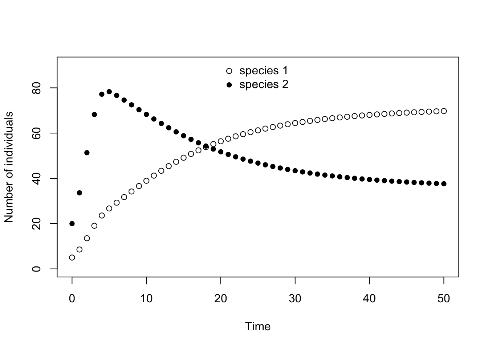
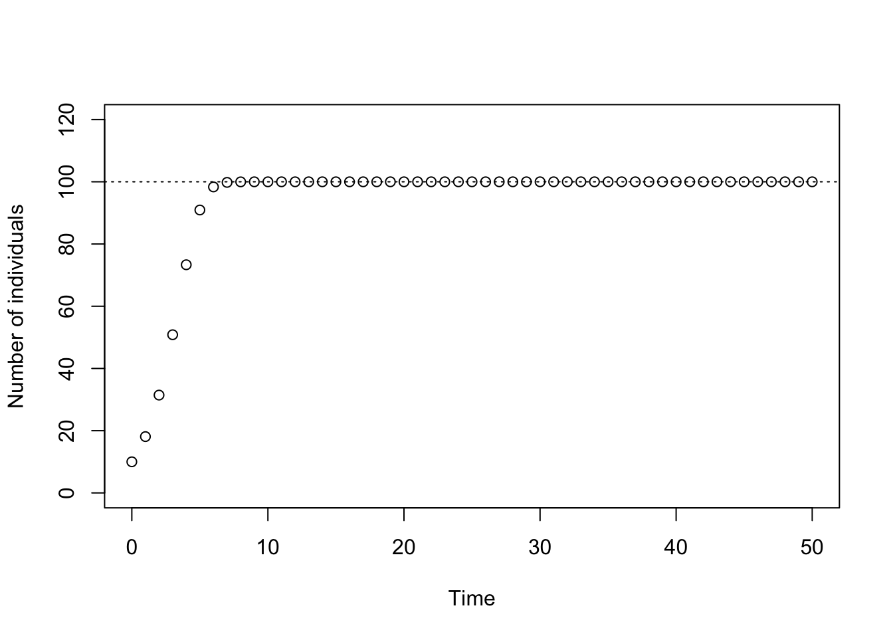

Exercise: Competition
LV in discrete time
The Lotka-Volterra competition model in discrete time can be written as the following system of two difference equations: \[ \begin{align} N_1(t+1)&=N_1(t)+N_1(t)r_1\bigg(1-\frac{N_1(t)+\alpha N_2(t)}{K_1}\bigg)\\ N_2(t+1)&=N_2(t)+N_2(t)r_2\bigg(1-\frac{N_2(t)+\beta N_1(t)}{K_2}\bigg) \end{align} \]
In this exercise, you will investigate the behavior of this Lotka-Volterra competition model by iterating this system of equations. To do this, we first define a function that describes how the population size of two competing species one time step in the future depends on their population sizes at the current time step.
LVcomp <- function(N, r1, r2, K1, K2, alpha, beta) {
N1.t1 <- N[1] + r1 * N[1] * (1 - (N[1] + alpha * N[2])/K1)
N2.t1 <- N[2] + r2 * N[2] * (1 - (N[2] + beta * N[1])/K2)
c(N1.t1, N2.t1)
}This user-defined function has seven arguments. The first is the two-dimensional population vector N, then comes the intrinsic growth rates, the carrying capacities, and the competition coefficients for the each species. In the next code-block, all parameter values and the initial population size vector N.0 specifying the initial densities for the two species are determined.
The following code produces the time series for the two competing species. We use code that you have seen in a similar way in previous exercises. First, we create an empty data frame, called N, in which we store the time series. It has two columns, one for each species, and t+1 rows, one row for the initial population vector, and t rows for the future population vectors.
t <- 50 # we set the length of the time series, which determines the number of rows in the data frame
N <- data.frame(Species1=rep(NA, t+1), Species2=rep(NA, t+1))Let us define an initial population vector at time \(t=0\) and store it in the first row of the data frame.
N0 <- c(5, 20)
N[1, ] <- N0 # we store the initial population vector in the first rowNext, we use a for-loop to iterate the time series. In each iteration of the for-loop we use the function LVcomp to produce the population vector at the next time step and store the outcome in a new row in the data frame N. Note, that in this example we use the following parameters: r1=.9, r2=.9, K1=100, K2=100, alpha=0.8, beta=0.9.
for (i in 1:t){
N[i + 1, ] <- LVcomp(N[i, ], r1=.9, r2=.9, K1=100, K2=100, alpha=0.8, beta=0.9)
} # this for-loop iterates the population dynamics t-times
head(N) # let's have a sneak peak at the data frame, just to make sure that everything went correctly## Species1 Species2
## 1 5.00000 20.00000
## 2 8.55500 33.59000
## 3 13.52680 51.33877
## 4 19.05411 68.19760
## 5 23.57928 77.19172
## 6 26.69189 78.29420Finally, let us plot the time series. To plot the columns in a data frame as separate lines, we can use the function matplot.
matplot(0:t, N, type = "p", pch = c(1,16), lty = 1:2, col = 1, ylim = c(0, 90), ylab="Number of individuals", xlab="Time")
legend("top", c(expression("species 1 "), expression("species 2 ")), pch = c(1,16), bty = "n")
Logistic growth in discrete time
Before we actually look at competition between two species, let us go back one step. We can use the above code to investigate the population dynamics of a single species that growths according to logistic growth in discrete time. Recall the lecture about the discrete time logistic model. All that we have to do for that is to set the initial population size of one species, say species 2, equal to zero, that is \(N_2(t=0)=0\). This works because in a population without immigration and emigration, a species that is not present at the beginning will never be present, and the model behaves exactly as a single species model.
Here, you can see the population dynamics as resulting from the above parameter values. The plot also contains a horizontal line indicating the value of the carrying capacity of species 1.
t <- 50 # we set the length of the time series, which determines the number of rows in the data frame
N <- data.frame(Species1=rep(NA, t+1), Species2=rep(NA, t+1)) # empty data frame
N0 <- c(10, 0) # starting population vector; note that we set N2=0!
N[1, ] <- N0 # we store the initial population vector in the first row
for (i in 1:t){
N[i + 1, ] <- LVcomp(N[i, ], r1=0.9, r2=0.9, K1=100, K2=100, alpha=0.8, beta=0.9)
} # this for-loop iterates the population dynamics t-times
# let's plot the time series
matplot(0:t, N, type = "p", pch =c(1,16), col = 1, ylim = c(0, 120), ylab="Number of individuals", xlab="Time")
abline(h = 100, lty = 3) # plots a horizontal line indicating the carrying capacity of species 1
legend("top", c(expression("species1 "), expression("species2")), pch =c(1,16), bty = "n")
Vary the intrinsic growth rate r1 to investigate the effect this has on the population dynamics. For example, you could try the values r1=0.5, 0.9, 1.5, 1.9, 2.1, 2.4, 2.5, 2.6. What do you observe? Feel free to choose additional values to complete your understanding.
Does the behavior you observe change when you alter (i) the value of the carrying capacity K or (ii) the initial population size at time zero?
t <- 50
N <- data.frame(Species1=rep(NA, t+1), Species2=rep(NA, t+1))
N0 <- c(10, 0)
N[1, ] <- N0
N <- matrix(NA, nrow = t + 1, ncol = 2)
N[1, ] <- N0
for (i in 1:t){
N[i + 1, ] <- LVcomp(N[i, ], r1=0.5, r2=0.9, K1=100, K2=100, alpha=0.8, beta=0.9)
}
N.r.0p5 <- N # here, we assign the matrix that contains the data for the new r-value to a new object, called N.r.0p5. When we plot the data with the following command, we have to change the name of the matrix there accordingly.
matplot(0:t, N.r.0p5, type = "p", pch =c(1,16), col = 1, ylim = c(0, 120), ylab="Number of individuals", xlab="Time")
abline(h = 100, lty = 3) # plots a line indicating the carrying capacity of species 1
legend("top", c(expression("species1 "), expression("species2")), pch =c(1,16), bty = "n")
In the above code, we assigned the matrix that contains the data for the new r-value to a new object, called N.r.0p5 (reminding us that the r-value equals 0.5 in this run). When we plot the data we have to change the name of the matrix in the plotting command accordingly. In this way, it is possible to always evaluate the same piece of code after a parameter value has been changed but simultaneously keeping the results in different data frames.
Competition between two species
In order to investigate competition between two species, both species need to have a non-zero density at t=0. Thus, in this tab you have to choose a starting vector lines this one, N0 <- c(10, 10), where both densities are different from zero.
In this part of the exercise, you investigate the effect of the various parameters on the outcome of competition between two species. Specifically, investigate the following questions.
First focus on the case that both carrying capacities are equal,
K1=K2, and that the intrinsic growth rates are relatively small, say,r1 < 1andr2 < 1. Under this scenario, look at the following cases: \[ \begin{align} \mathrm{i)\,\,} & \alpha<1<\beta\\ \mathrm{ii)\,\,} & \alpha>1>\beta\\ \mathrm{iii)\,\,} & 1<\alpha, \beta\\ \mathrm{iv)\,\,} & \alpha, \beta<1 \end{align} \] Note: It makes sense avoid parameter combinations where simultaneouslyK1 = K2,r1 = r2, andalpha = beta, since under such complete symmetry the two species are perfectly neutral with respect to each other. Let us therefore ignore this extremely special case.Allow the two carrying capacities to differ from each other, for instance,
K1 < K2. Does this alter your previous results? If yes, how?The fact that the single-species logistic equation allows for overshooting and complicated population dynamical cycles when r>2 carries over to the LV-competition model in discrete time (note, that this is not possible in the continuous time versions of both these models). Investigate this possibility for the special case that the intrinsic growth rates and carrying capacities of both species are equal to each other,
r1 = r2and andK1 = K2(but notalphaandbeta). What happens if both growth rates are close to 2 but slightly less and what happens if you increase both growth rates slightly above 2? You could combine this investigation with the different configurations that the competition competition coefficients can take as listed under (1).
You can investigate these questions, by re-using the code from the previous tab, change the parameters as needed, store the time series in different data frame that you can then use to plot the dynamics.